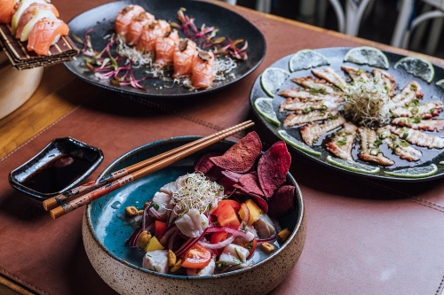

Ilhabela tem diversos lugares em que você pode se hospedar, tanto como hoteis, Rb&b, pousadas, chales, etc. Por isso vamos listar alguns aqui para vocês.
Além de quartos com TV de tela plana, minibar e ar-condicionado, é possível acessar a internet com o wi-fi gratuito, o que permite unir o trabalho e o lazer com facilidade.
O Hotel Praia do Portinho oferece hospedagens a partir de R$548,00. Além disso, como cliente especial do Hotel Praia do Portinho, você pode aproveitar a piscina e o café da manhã disponíveis no local. Os hóspedes que chegam de carro têm acesso ao estacionamento grátis.
.jpg)
Com hospedagens a partir de R$384,00 Kalango Hotel Boutique é uma ótima opção para pessoas que visitam Ilhabela. Tem um ambiente familiar além de várias comodidades para enriquecer a sua estadia.
Os quartos contam com TV de tela plana, minibar e ar-condicionado, e no Kalango Hotel Boutique é fácil acessar a internet com o wi-fi gratuito disponível.
Você pode ainda desfrutar algumas das comodidades oferecidas pelo hotel de pequeno porte, como recepção 24 horas, serviço de quarto e lojas. Além disso, os hóspedes podem aproveitar a piscina e o café da manhã durante a estadia. Para aumentar a conveniência, o estacionamento grátis está disponível para os hóspedes.
.jpg)
Esse hotel oferece hospedagens a partir de R$600,00. O Barra do Piúva conta com um serviço atencioso, acomodações confortáveis, infraestrutura de lazer e gastronomia, tudo preparado para você desfrutar desta pequena jóia em uma das ilhas mais belas do Brasil.
.jpg)
Sabemos que Ilhabela oferece muita beleza, conforto, e claro que não poderia faltar a gastronomia, então vamos apresentar alguns lugares para você já ir anotando no seu roteiro.
Restaurante em Ilhabela com esta vista da praia do Perequê e com este sabor, só o Pimenta!” Ouvimos esta exclamação todos os dias no almoço e no jantar. A vista é mesmo impressionante, dia e noite, e perfeita como cenário para suas refeições na praia. . O Menu a La Carte com mais de 80 opções entre carne, peixe, massa e vegetariano e nossos Pratos do Dia, com o menu que muda todos os dias, faz do Restaurante Pimenta de Cheiro de Ilhabela o mais visitado, amado e exclamado da Ilha.!
.jpg)
O Floresta é bar mais charmoso e com a atmosfera mais incrível de Ilhabela. Localizado dentro do Hostel da Vila, o Floresta é lugar certo para ouvir uma boa música, conhecer pessoas e se deliciar com comidinhas e drinks inesquecíveis!
.jpg)
Restaurante especializado em Poke e Sushi, além de outros pratos. Localizado em um charmoso shopping céu aberto na praia do Pereque. Ambiente muito agradável.

.jpg)
Essas são somente algumas das opções presentes na ilha, então se você gostou te convido a nos seguir por aqui para ir acompanhando mais dicas para incluir no seu roteiro, obrigada e até a próxima <3